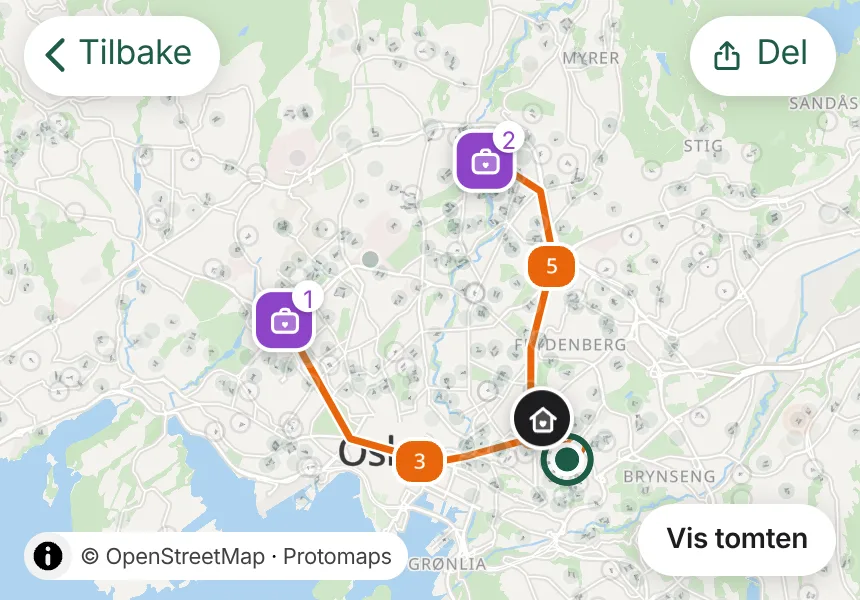
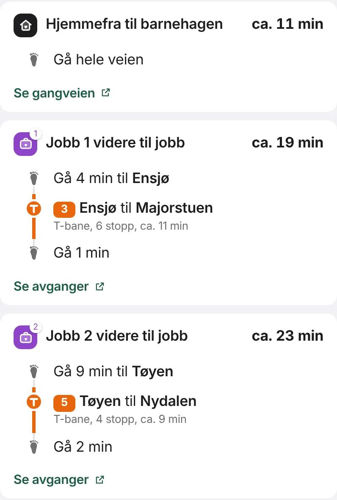

A normal day is a triangle: from home, via the kindergarten and on to work. Tassen's route planner shows the whole trip for every kindergarten in Oslo and Bærum.
Tassen · Updated 18 November 2026
2trips every day: drop-off and pick-up
6places you can add
1change at most
Why the whole trip counts
Most parents look at how far the kindergarten is from home. But a normal day is a triangle: from home, via the kindergarten and on to work. In the afternoon it goes the other way. A kindergarten five minutes from home can mean a long detour if it is in the wrong direction, while one a little further away can sit right by the metro you take anyway.
You will drop off and pick up more than 200 days a year. Ten minutes saved each way adds up to more than 60 hours a year.
The most important adviceCompare the whole trip from home via the kindergarten to work, not just the distance from home. And check pick-up too: that is the busiest one.
What it looks like in Tassen

The map shows the whole trip, with the lines to take (screenshot from the Norwegian version).

The trip cards show each part of the trip: walking, lines and changes.
How to do it
Pick your home. Tap the map.
Add your work. The “Work” field is ready. With “Add more places” you can add up to six places, and for each job you can set how many days a week you are there.
Choose transit or bike. “Travel by” switches between public transport and bike.
Choose “Short commute”. Tassen then ranks all kindergartens by the whole trip, together with the other things you chose as important.
Open a kindergarten. The route planner shows the trip from home to the kindergarten and on to work: walking, lines, where to change and roughly how long it takes. Switch between drop-off and pick-up.
Check the departures. “See departures” opens the trip in Google Maps with the next departures.
How Tassen works it out
Tassen uses the stops and lines in Ruter's network from Entur1: metro, tram, bus and train. The route planner looks for stops within a kilometre's walk, takes at most one change with up to 250 metres' walk between stops, and adds a typical waiting time for each line. If walking is about as quick, Tassen suggests walking. Bike times are estimated from the distance with detours, at about 15 km/h.
An estimate, not a timetableThe times are worked out from the network, not from today's departures. Before you decide, check the trip in Ruter's journey planner2 or via “See departures”, at the time you will actually drop off and pick up.
Questions and answers
How do I find a kindergarten on the way to work in Oslo?
Pick your home and work in Tassen and choose “Short commute”. Tassen works out the whole trip from home via the kindergarten and on to work for every kindergarten and ranks them by it. Open a kindergarten to see the lines, where to change and roughly how long it takes.
Can we add two jobs, or days working from home?
Yes. You can add up to six places, for example two parents at different offices or a grandparent who picks up. For each job you can set how many days a week you are at work, so a job you go to twice a week counts less.
Does it work by bike?
Yes. Choose “Bike”. The ranking uses bike times calibrated against Entur's bike routes, and a kindergarten's page shows the actual route and time from Entur. Very short trips are walked.
Are the travel times real-time?
No. Tassen uses the stops and lines in Ruter's network from Entur and adds a typical waiting time. Tap “See departures” to see the next departures in Google Maps.
Sources
Entur: stops and lines for all of Norway (open data, NLOD). developer.entur.no
Ruter: journey planner and real-time departures for Oslo and Akershus. ruter.no